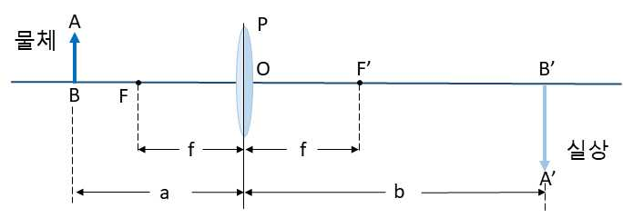

문제 7
단계 1
1) 아래 그림과 같은 상황에서 실상이 생기는 원리를 빛의 경로를 그려서 설명하라.
(\(f\): 초점거리, \(a\): 렌즈에서 물체까지의 거리, \(b\)=렌즈에서 실상까지의 거리, 렌즈는 얇은 렌즈라고 가정한다.)

2) 1)번 답을 바탕으로 \(a, b, f\)를 이용하여 렌즈 관계식(렌즈 방정식)을 설명하라.
3) 볼록렌즈 두 개를 이용하여 현미경을 만드는 방법을 정성적으로 설명하라.
단계 2
1) 데이비슨-저머 실험은 니켈 결정에 전자선을 쏘이고 산란되는 전자의 각도를 측정하는 실험이다. 이 실험의 결과와 의미에 대하여 정성적으로 설명하라.
2) 데이비슨-저머 실험에서 전자의 물질파 파장을 어떻게 조절할 수 있는지 설명하시오
3) 전자현미경의 분해성능이 광학 현미경 보다 높은 이유는?
단계 3
1) 핵의 알파붕괴 현상에 관계된 양자역학적 현상은 무엇인가?
2) STM(주사 투과 현미경)의 원리를 정성적으로 간단히 설명하라.